Technisch met een creatieve insteek, dat is wat mij altijd al geboeid heeft. In het theater was dat het uitvoeren en maken van een stageplan; welke lamp of microfoon gebruik ik wanneer en vooral ook waarom? Tegenwoordig uit ik die interesse het liefst achter de computer. Ervoor zorgend dat een creatief ontwerp of leuk idee tot uiting komt in een bruikbaar product. Of te wel de gegeven wensen vertalen naar een technisch product.
Ik voel me binnen verschillende teams in een bedrijf goed op mijn gemak en weet dan ook vaak de vertaalslag tussen die teams te maken. Veel voldoening haal ik uit het neerzetten van een prestatie in teamverband maar ik kan ook heerlijk in mijn eentje helemaal opgaan in mijn werk.
